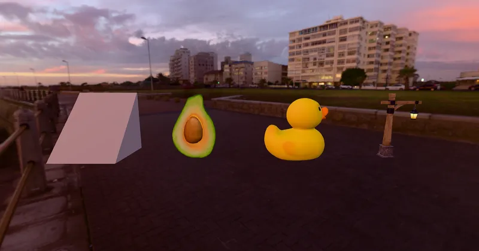

GLTF GLTF Extensions KHR_mesh_quantization
Mesh Quantization (4 Models) - RedGPU WebGPU Example
Displays all four official Khronos glTF-Quantized models (AnimatedMorphCube, Avocado, Duck, Lantern) side by side to verify quantized vertices and morph animation.
Khronos 공식 glTF-Quantized 4종 모델(AnimatedMorphCube, Avocado, Duck, Lantern)을 한 화면에 배치하여 정수 양자화 정점 및 모프 애니메이션을 검증합니다.
